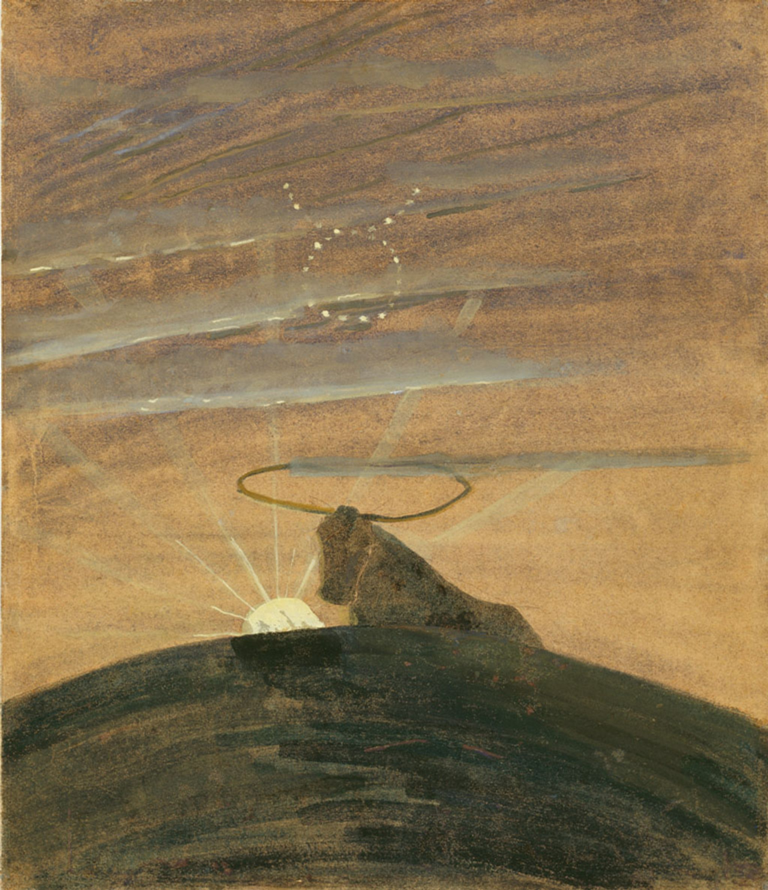
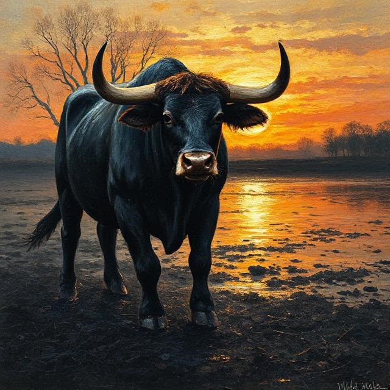

Mikalojus Konstantinas Čiurlionis ir lietuvių poetai
„Saulė eina Jaučio ženklu. IV iš 12 paveikslų ciklo „Zodiakas“

J. Vaičaitė iš Zodiako IV Jautis
Eina mano jaučiai
per juodą pūdymą.
Baulbia nykiai ir skausžiai,
tolimus kaimus budina.
Balandis. šilko botagai.
Balandis. švilpiantys kirčiai.
...Minčiau basa jų taką
nikad su jais nesiskirčiau.
pūdymo juodą būgną.
...Ežeras šiauriškai ūžia,
saulė teka iš dugno...
ęina jaučiai pęr juodą
Promt:eina jautis per juodą žemę, šaukia liūdnai. Žadina kaimus. Dabar yra balandžio mėnuo. Jautis daužo kanopomis juodą žemę. Už jo besileidžianti saulė atsispindi ežero dugne.
Vertimas į anglų: a bull walks through the black earth, crying sadly. Waking up the villages. Now it is April. The bull beats the black earth with his hooves. Behind him, the setting sun is reflected on the lake bed.
